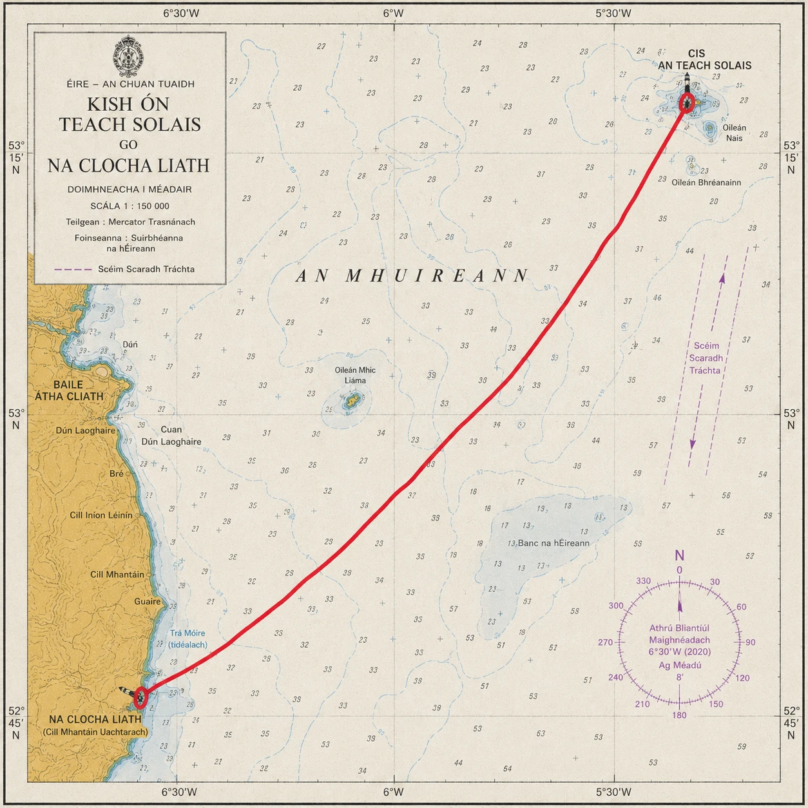

Leinster
Kish (Co. Dublin) - Greystones (Co. Wicklow)
No Victorian myth — a working light, floated out and stood upright over the sand.
- Distance
- ≈ 20 km 10 km+ · accredited
- The light
- Kish Co. Dublin · fixed point
- Shore
- Greystones Co. Wicklow · either direction
- Water
- Dublin Bay Leinster
The story
No Victorian myth — a working light, floated out and stood upright over the sand.
Telescopic concrete tower floated out and jacked upright, 1965.
The Kish is the modern light of the series, and wears it plainly. There is no Victorian keeper's tragedy here, no folklore worn smooth by retelling — only a notorious sandbank in the mouth of Dublin Bay that wrecked ships for centuries, and a twentieth-century answer to it.
That answer was audacious in its own right. Rather than build on the shifting sand, engineers cast a telescopic concrete tower on the Dún Laoghaire shore in the early 1960s, floated the whole structure out to the bank, sank its base, and jacked the tower upward into position. It was lit in 1965 and has stood, unmanned since automation, ever since — a working navigation light for a working capital.
It is fitting that Leinster's light should be the practical one: no myth, no granite epic, just a hard problem solved and a harbour kept open.
The crossing
Between Kish and Greystones.
The crossing links the Kish, on its bank in the mouth of Dublin Bay, with the Wicklow coast at Greystones, quitting the shipping approaches for the mainland. It may be swum in either direction and may come ashore anywhere on the coast; the Kish is the mark.
This is Irish Sea water, and the sea here works to a strong north–south tidal rhythm that must be read and timed rather than fought. Commercial traffic uses the same approaches, so the crossing is planned around it. The exposure is gentler than the Atlantic swims, but the tides are unforgiving of a poorly chosen window.
